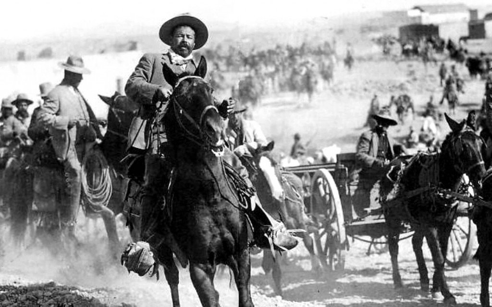
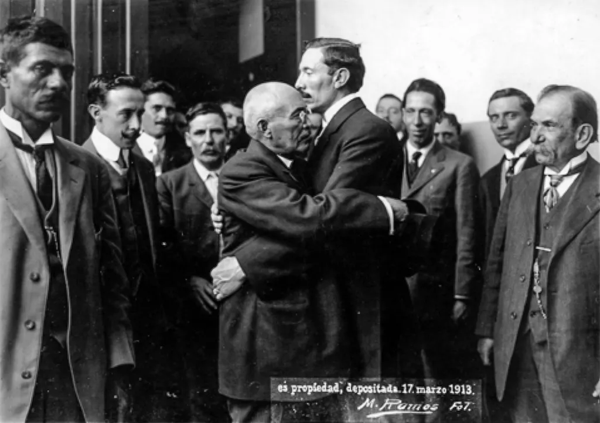
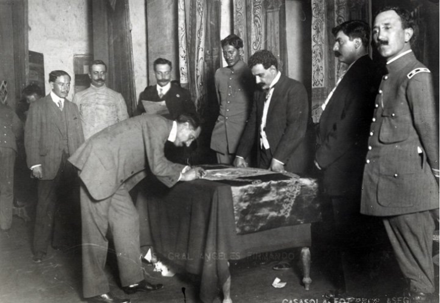

22 de mayo 1909
22 de mayo 1909
 5 de octubre de 1910
5 de octubre de 1910
 20 de noviembre 1910
20 de noviembre 1910
25 de mayo de 1911
 6 de noviembre de 1911
6 de noviembre de 1911
 28 de noviembre de 1911
28 de noviembre de 1911
 9 de febrero de 1913
9 de febrero de 1913
 22 de febrero de 1913
22 de febrero de 1913
 26 de marzo de 1913
26 de marzo de 1913

29 de septiembre de 1913
2 de octubre de 1913

15 de julio de 1914
 10 de agosto de 1914
10 de agosto de 1914

10 de octubre de 1914
Diciembre 1914
Marzo 1915
 13 de abril de 1915
13 de abril de 1915
 5 de febrero de 1917
5 de febrero de 1917